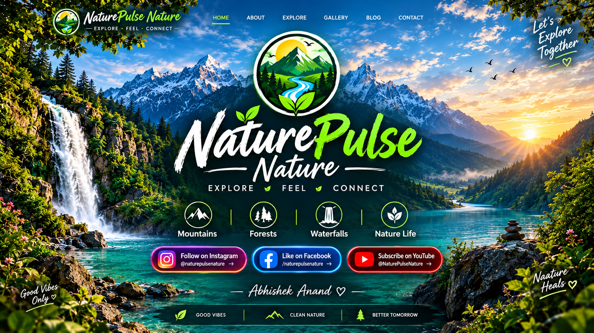

Instagram — Follow for daily nature vibes Facebook — Like our page YouTube — Subscribe for amazing videosTap the Instagram, Facebook, or YouTube button on the poster to open the real profile. NaturePulse Nature · Explore • Feel • Connect